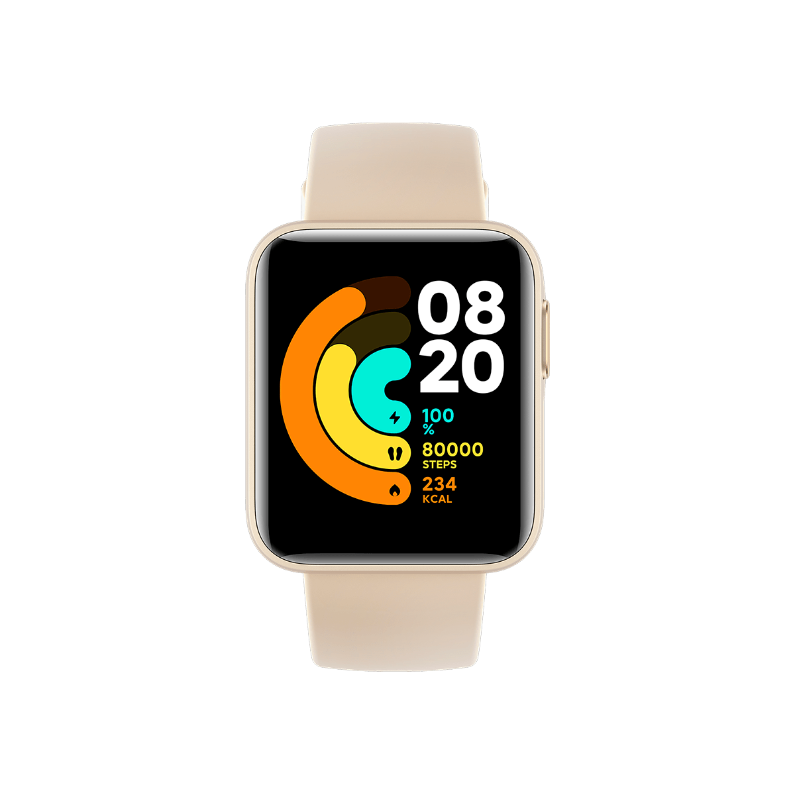

Xiaomi Watch Light
Precio: $150.88
El Xiaomi Watch Light es un reloj inteligente de última generación que combina estilo y funcionalidad. Con un diseño elegante y ligero, este dispositivo te permite llevar la tecnología en tu muñeca de una manera cómoda y sofisticada. Equipado con funciones de seguimiento de la salud, el Xiaomi Watch Light te brinda información en tiempo real sobre tu ritmo cardíaco, calidad del sueño y actividad física, ayudándote a mantener un estilo de vida saludable.